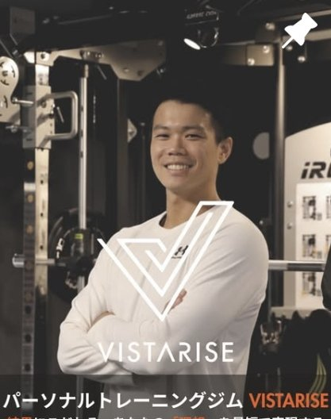
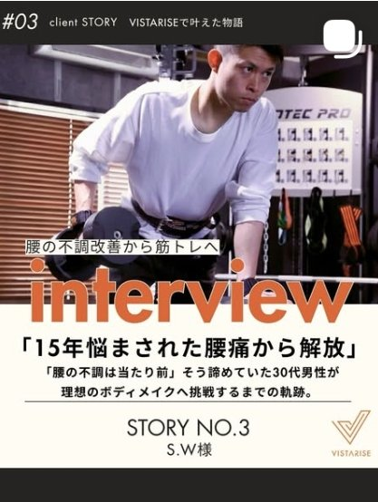
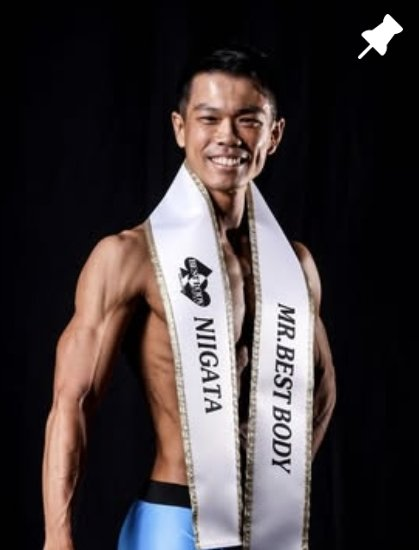
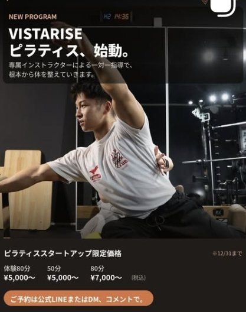
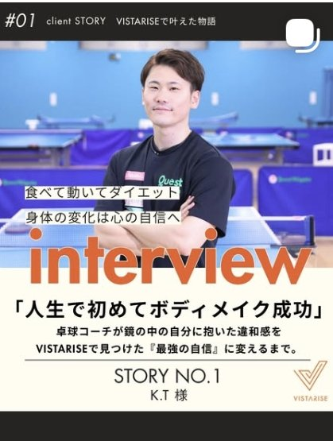
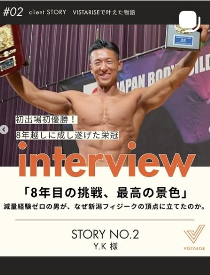

病院のリハビリ現場で6年。痛みの原因から整えるので、腰や膝に不安があっても始められます｜新潟市中央区のパーソナルジム

写真差し替え予定（指導中・笑顔の写真）姿勢と動作のチェックで、痛みや痩せにくさの原因を見つけます。
解剖学にもとづき、一つずつ丁寧に伝えます。
「食べて痩せる」で、リバウンドを防ぎます。
毎日の洋服選びを楽しめる身体へ。
前十字靭帯（ACL）の手術を4度経験し、小走りもできない状態からスタート。膝関節の機能回復とトレーニング復帰をサポートしながら、食事の質を整えて「食べて痩せる」を実践しました。
・小走りができるようになった
・階段の上り下りが軽快に
・体重−6.1kg、体脂肪率32.0%→24.5%（筋肉量は維持）
※効果には個人差があります
体重−5.6kg、体脂肪率−4.3%。
※効果には個人差があります

詳細文が入ります（仮）
※効果には個人差があります
詳細文が入ります（仮）
※効果には個人差があります
T.K様
K.C様
U.T様

代表トレーナー くにちゃん。病院のリハビリ現場で培った知識で、痛みや不安のある方にも、一人ひとりの身体に合わせて向き合います。
通常60分のところ、体験は90分。
姿勢・動作のチェックで「なぜ痩せにくいのか」「なぜ痛むのか」の原因を見つけ、あなたに合った進め方をご提案します。
目標・お悩み・生活習慣をお聞きします
身体のクセや硬さ、弱いところを評価します
あなたに合った運動を実際に体験します
評価の結果をもとに、今後の進め方をご提案します
90分
60分（1回あたり）
30分／月2回 10,000円〜

詳細・料金は確認中（仮）
無理な勧誘はありません
全く問題ありません
ございます。ジム敷地内
動ける服装、運動靴、水分、タオルをご持参ください

K.T様
S.W様

Y.K様